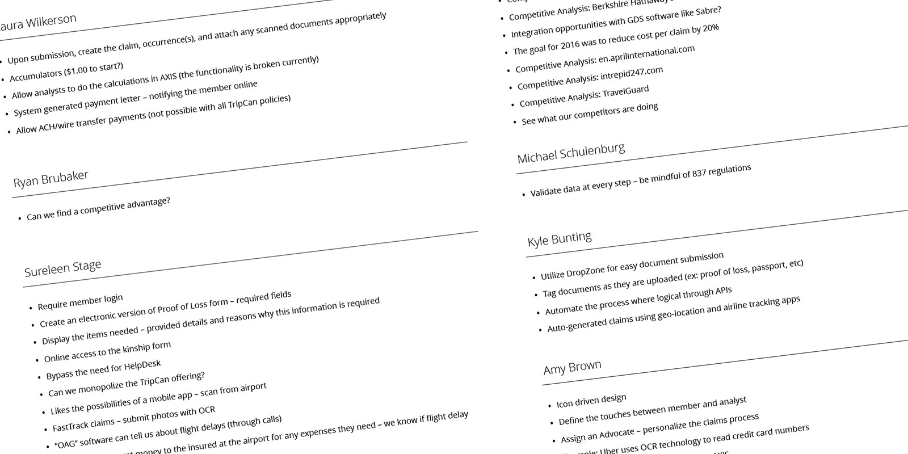
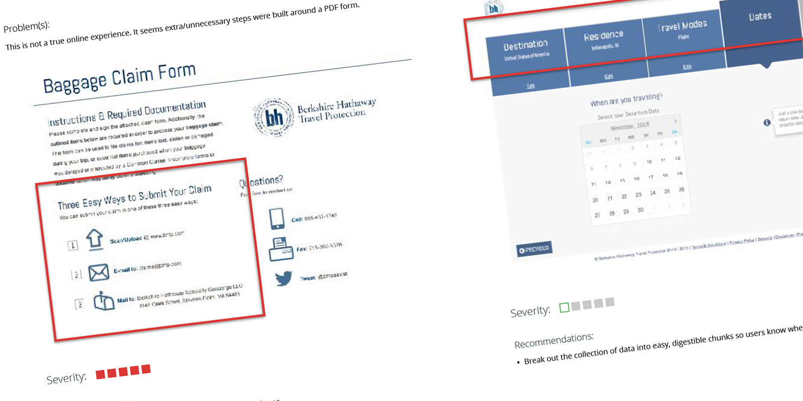
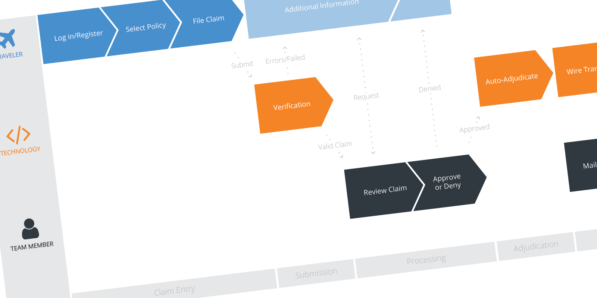
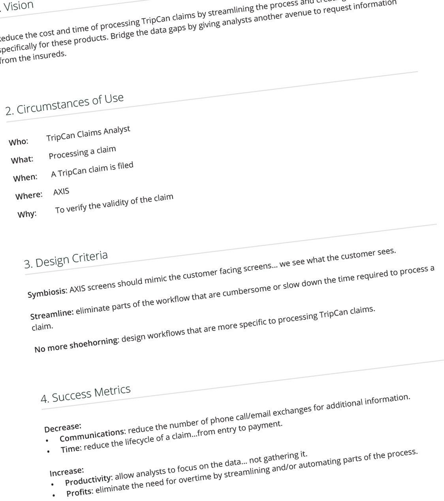
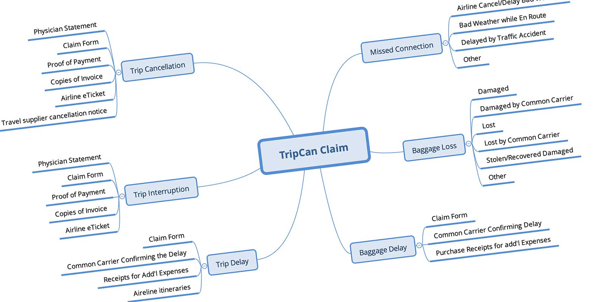
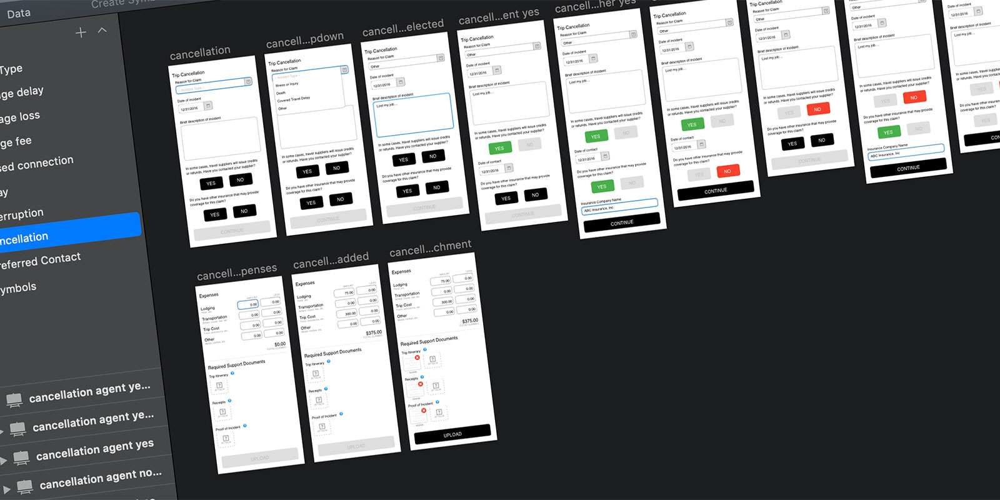
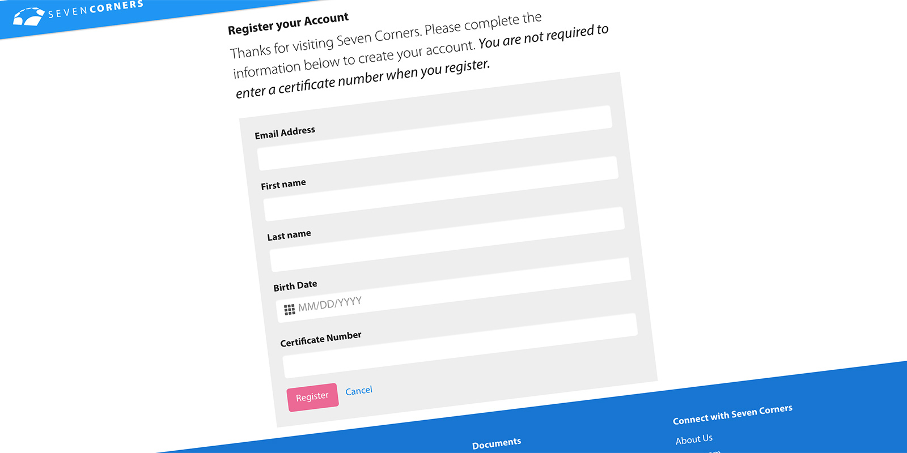
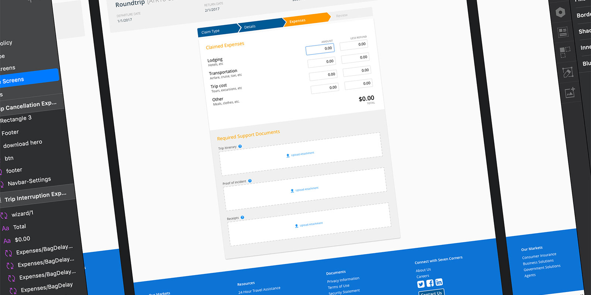
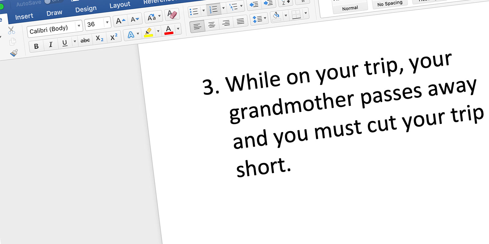

Online Claims
When a company knows they need UX, but is not sure how to begin
The Challenge
Ideally, I would be working two or three sprints ahead of development and have a well-groomed backlog. At this insurance company, the stakeholders would meet every three weeks to make their case for stories they needed in the next sprint.
This way of prioritizing work turns developers into firefighters… and makes it nearly impossible to know what stories are truly the highest priority.
Rather than let this deter me, I searched the backlog to find a feature to own. I was looking for a feature that would be beneficial to multiple departments, was customer facing, and I could demonstrate the full UX process. Online Claim Submission checked all of those boxes.
Pre-Kickoff Insights
As part of onboarding, I job-shadowed with multiple departments to better understand the business, the various roles, and to meet some of the users of the products I was supporting. I observed many manual processes that could be improved with technology.
Filing an insurance claim is never a good thing. Members must download documents, fill them out, and submit them. Internally, those files are manually entered into the application, assigned to the correct department, and queued for processing by an analyst. If information is missing, the analyst must call or send an email to the member. It is a very manual process and takes weeks to process.
As the number of pain points piled up, I knew I could make this process better for both the customer and business.
Role
I was the lead researcher and designer on this project. The project kicked off in November of 2016 and I worked on it until I left the company in February of 2017.
In June 2018, over a year after I left the company, online claims submission launched.
Un Understand
Hypothesis
By submitting claims online, the time to process claims will greatly decrease because the current process creates opportunities for errors and delays.
Defining the Problem
I had seen the existing workflow and witnessed the inefficiencies in the process. Instead of jumping straight to solutioning, I conducted a series of stakeholder interviews. These interviews served a few purposes, mostly I was trying to gather requirements and metrics for success… but I also used the opportunity to evangelize the UX process.
I spoke with nine individuals, seeking clarity on business goals, technology requirements and user needs. I compiled the interviews into a single document for everyone to review.

Pain Points Revealed
Finding a “competitive advantage” was a reoccurring theme from the stakeholders. I purchased policies with two competitors and conducted a heuristic evaluation on both processes. One online experience was terrific while the other made me jump through hoops.
A little secret about insurance companies… they don’t like paying out claims… they are more profitable when they don’t. I was challenged with balancing the customer experience and the business goals

Reframing the Problem
Evaluating the competition allowed me to see first-hand the customer experience when filing a claim was easy… and when it was purposely cumbersome. I had to offset the cost of any additional claims being filed by eliminating manual steps in the processing and adjudication process. I wanted technology… not people… to be the buffer.

Synopsis
I outlined my objectives and metrics for success in two Strategy Documents. The main objectives… improve the experience for both external members by making the claims submission process easier, while improving the experience for internal claims analyst by streamlining processes and bridging data gaps.

Si Simplify
Data Mapping
Before I could really put pen to paper and start exploring layout, I had to better understand the data gather aspects of filing a claim. Certain data is required for certain claim types. I began to reverse-engineer the current claim forms so I could build the new forms using progressive disclosure.

Wireframes
In order to show the new interactive claim forms, I built a low fidelity prototype. I knew the style of the page/forms was going to follow the design of the Member Portal, so I was more concerned about whether we were capturing the right data and the right time. My goal was to have a claim form simple enough to fill out from the airport on a mobile device. So I started with the mobile experience.
Low Fidelity Prototype
To validate I was on the right path, I scheduled time with two internal users. The first was a Claims Analyst who would be receiving and processing these claims. I also met with the manager of the department to review the screens and to discuss the new workflows this process would create.
During my research I found the top-3, most filed claim types. I printed the three scenarios out and asked each participant how they would file this claim. I recorded each task using Silverback. Here is a short video of one of the sessions.

Synopsis
After validating the wireframes with a small sample of my stakeholders, I was ready to increase the fidelity and moved it to a desktop experience.
Al Align
Parameters
The company launched a new marketing (and sales funnel) website in early 2016. In an effort to help drive traffic to the site, members would need to log in to their account to file a claim. This meant the wizard would be built in Sitefinity and adhere to the styles of the marketing site.

High Fidelity Mock-Ups
The next step was taking the low fidelity (mobile-first) prototype and creating a higher fidelity, desktop version. A color palette and most form elements were already styled, the challenge was creating logical steps in the wizard… built to be dynamic based on previous steps in the process.

Proposed Solution
In February, 2017 I left the company to persue other opportunities. I worked with the business and technology teams to transfer the knowledge I had gained. I provided both teams with the deliverables from the Discovery and Iteration Phases and the wireframe prototype I had built. By advancing the ball as far as I did, I hoped this feature would become prioritized and developed.
Va Validate
User Testing
Before I could really put pen to paper and start exploring layout, I had to better understand the data gather aspects of filing a claim. Certain data is required for certain claim types. I began to reverse-engineer the current claim forms so I could build the new forms using progressive disclosure.

My plan was to complete the high resolution/desktop prototype and validate it with the other stakeholders. I had planned on taking the internal feedback, incorporating it, and validating the design with external people. I would have liked to have had three rounds of user testing before development.
Takeaways…
Things I Learned
- Business goals and user needs aren’t always in alignment
- Being the first UX hire and solo practitioner in a company can be difficult
- New software: Silverback and XMind
The Launch
I built my prototype to include six claim types… Trip Cancellation, Travel Interruption, Trip Delay, Missed Connection, Baggage Loss, and Baggage Delay. To date, only Trip Cancellation, Trip Delay, and Baggage Delay have launched. To boot, these online claims are only available for newer policies. This means only 2-3% of claims today get submitted through the online portal.
The Impact
In November of 2018 I reached out to the CTO for an update:
They are reporting that they are processing claims in 1/3 the time, and they are turning online claims around in 5 days, versus 30-45 days for paper/scanned claims.
Reading that stat gives me great joy and a feeling of accomplishment. I would have loved the opportunity to see this project all the way through the UX process, but overall the project met the success metrics for both internal and external users. I hope they add the remaining claim types and see further success in the future.